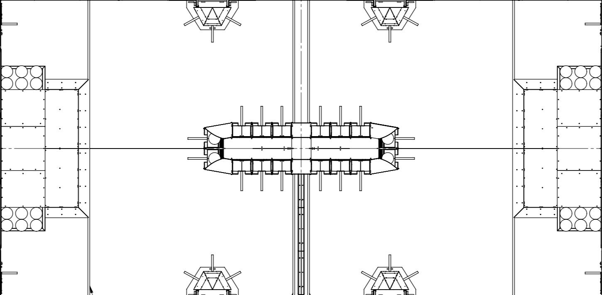

100%
Robot:
Unknown state
@
disconnected

yaw
distance
pitch
distance From Center X
NetworkTables websocket:
Unknown state
 Robot: Unknown state @ disconnected
Robot: Unknown state @ disconnected
Robot: Unknown state @ disconnected
Robot: Unknown state @ disconnected
 NetworkTables websocket: Unknown state
NetworkTables websocket: Unknown state